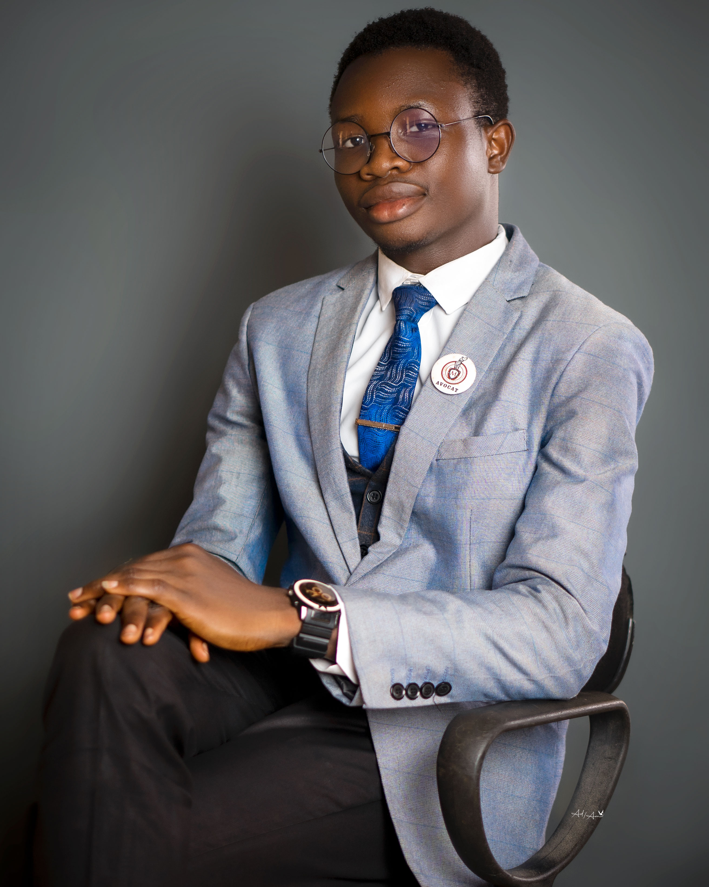
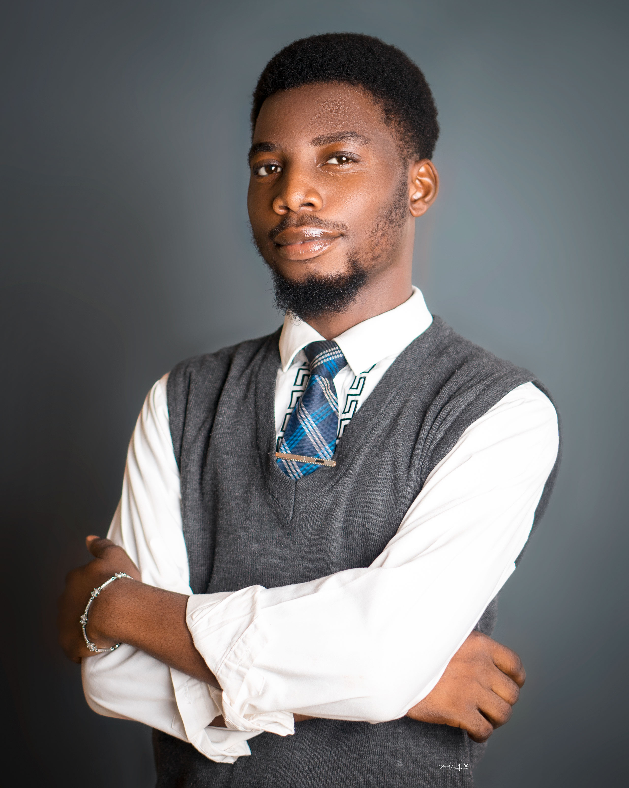
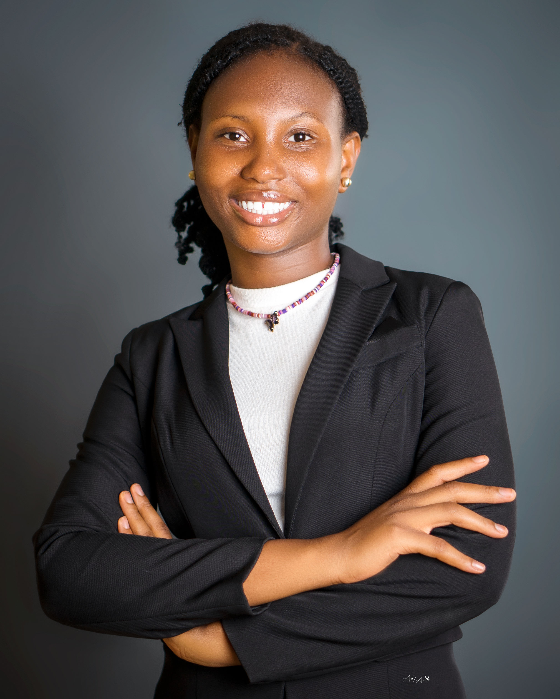

Meet Our Team

Adetunji Michael Obadare
Lord Advocate

Ogunkoya Francis Ifeoluwa
Deputy Lord Advocate
Nwoke Ozioma Victoria
General Secretary

Alakija Olarewaju Victoria
Assistant General Secretary

Awe Faith Opemipo
Financial Secretary
Olabemiwo Deborah Moyosoluwa
Director of Litigation

Olayiwola Olayemi Mary
Director of Academics

Aina Halimat Olabisi
Welfare Secretary

Taiwo Moriyanuoluwa Esther
Director of Socials

Oluwole Joshua Abiodun
Director of Sports

Oni Evidence Abimfoluwa
Treasurer

Taiwo Zainab Oluwadamilola
PRO
Abiona Omotolani Aramide
Director of due Processes